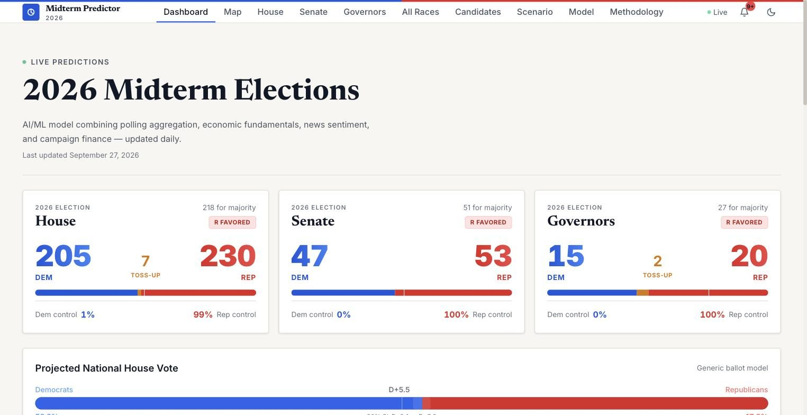
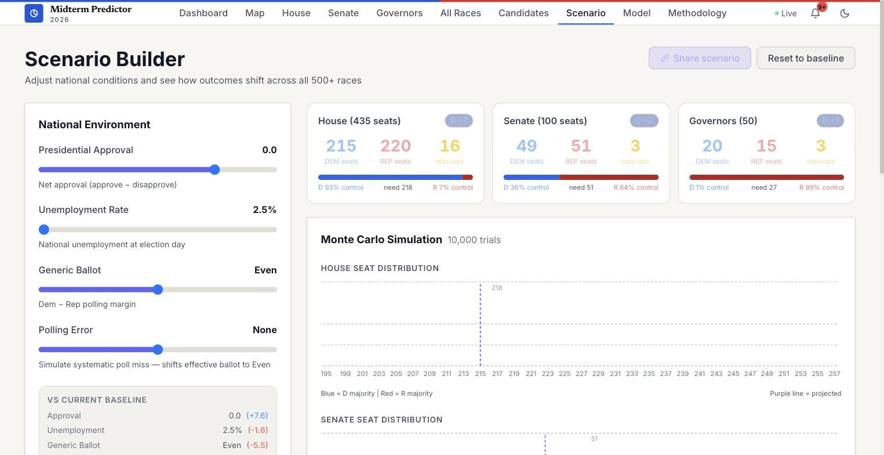

Also built
- Context
- Personal, solo
- Role
- Everything
- Status
- Source open; host paused
- 505
- races forecast
- 2,240
- historical races
- 10k
- simulations
2026 Midterm Forecast
505 races, with a correlated simulation
A forecast for all 505 races in the 2026 US midterms, 435 House, 34 Senate, and 36 Governor, with predicted margins, 80% intervals, and a Monte Carlo seat distribution, fed by live polling, fundraising, and economic pipelines.


The model
Ridge regression on 2,240 real district-level results: 2,115 from the MIT Election Data and Science Lab covering every House district across the 2006, 2010, 2014, 2018, and 2022 cycles, plus 125 hand-curated competitive Senate and Governor races.
The eight features are partisan lean, its square, lean interacted with incumbency, incumbency, the live generic ballot margin, presidential approval, unemployment, and a presidential-year term. Training is restricted to contested races, so uncontested districts cannot teach the model to be confident about nothing. Five-fold cross-validated MAE is 7.95 points, with a 6.87-point residual standard deviation calibrated on competitive races.
One input deliberately kept out of the regression
Fundraising advantage is applied as a bounded post-hoc adjustment, capped at plus or minus 3 points, rather than as a Ridge feature. The reason is a data problem, not a modelling preference: the historical training set has no fundraising records, so including it as a feature produces near-zero training variance and a coefficient inflated far beyond what the data supports.
A bounded adjustment you can reason about is better than a learned weight you cannot defend.
Correlated simulation
The seat distribution comes from 10,000 trials in which a shared national swing error, sigma of 2 points, is applied across every race, plus an independent per-race error drawn from that race's own interval.
Treating races as fully independent produces tails that are far too thin, which is precisely how a forecast ends up confidently wrong about control of a chamber.
Live inputs
Generic ballot polls and candidate names are scraped from Wikipedia every four hours, weighted by pollster grade. FEC fundraising comes from the weball26 bulk file daily, no API key required. Unemployment comes from the BLS API, with GDP and consumer sentiment from FRED and seeded fallbacks when a source is unreachable.
The candidate scraper returns a name only when exactly one candidate has declared for a party's primary, so a contested primary shows TBD rather than a guess.
What the site does with it
Per-race pages showing the model inputs behind each prediction. A tipping-point view computing each race's marginal contribution to majority probability across simulations. A scenario builder that re-runs the full simulation for any set of national conditions and encodes its state in the URL, so a scenario is shareable. And a backtest tab with per-cycle accuracy and the biggest misses.
Status
Deployed on a t3.micro behind Caddy. The instance is shut down to save hosting cost, and the source is open. The suite is 23 tests with the Wikipedia and FEC scrapers patched, so no test touches the network.
Stack FastAPI · scikit-learn · React and Vite · Docker · AWS EC2 behind Caddy · 23 tests with network sources patched
Source Live deployment paused to save hosting cost; the source and the write-up below cover it in full.